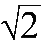
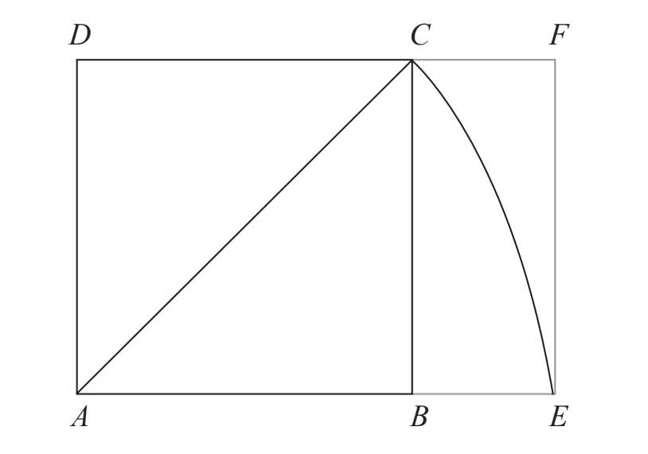
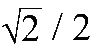
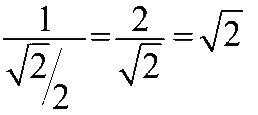
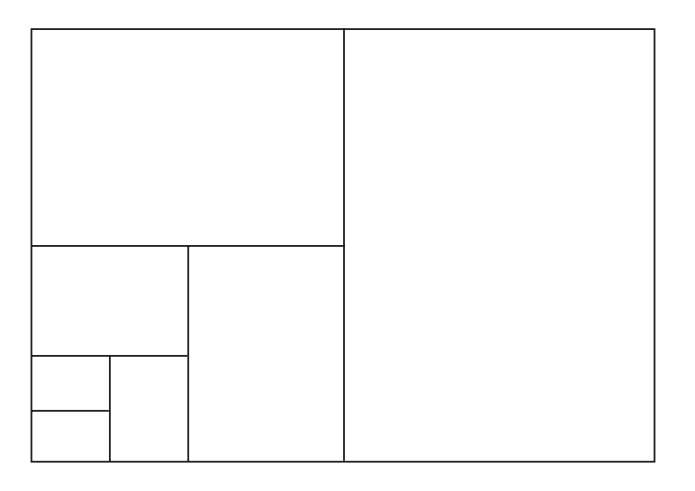
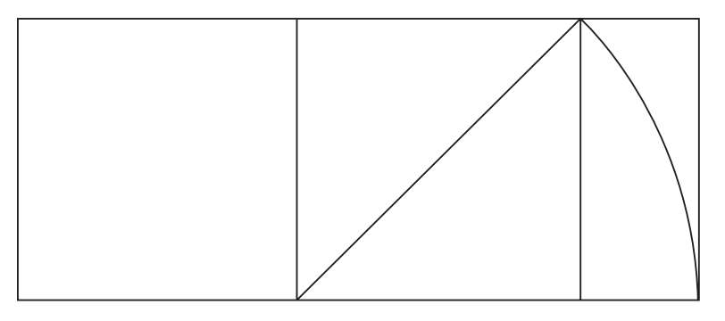
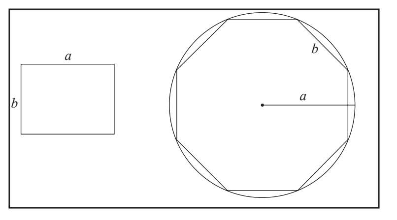
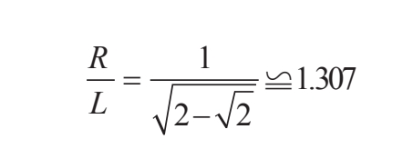

我们已经知道电视屏幕是一种常见的矩形，因为它频繁地出现在人们的日常生活中。下面来看一下每天都会见到的其他矩形，我们会拿它们与黄金矩形做一番比较，以便更好地理解黄金矩形的独特性。
矩形
首先画出边长为1的正方形ABCD，然后以该正方形的一个顶点为圆心（本例中为顶点A），以该顶点所在的角到对角的距离为半径（AC）画弧。圆弧与AB的延长线相交于点E。AE等于正方形ABCD的对角线，长度为，因此，这个矩形的邻边分别为1和

。
矩形的特点是，如果沿长边的中点将其一分为二，就会得到新的矩形，面积是最初矩形的一半。新矩形的短边为

，因此邻边之比还是。通过计算得到

。矩形的磬折形就是它自己。上面的过程可以重复无数次来不断获得新的矩形。我们同样可以将该矩形的宽延长一倍来得到矩形。这一过程重复数次后便如下图所示：

人们将矩形的这一特点应用到了欧洲纸张的尺寸上，也就是众所周知的“DIN标准”。“DIN”是德国标准化学会（Deutsches Institut fur Normung）首字母的缩写，该机构在1922年推出了纸张尺寸的标准。这一标准最早由工程师沃尔特·波斯特曼（Walter Porstmann）创造。
纸张最大的尺寸为A0，它是面积为1平方米的矩形。A0纸可以裁剪为其他不同的尺寸。每种规格按照A0纸的分割顺序依次编号（A1、A2、A3、A4等等）。纸张一分为二后，新矩形的邻边之比不变。
就内接多边形来说，矩形的宽是圆的半径，长是内接于圆内的正方形的边长。举例来说，如果圆的半径为1，内接正方形的边长就等于。矩形经常应用于建筑的地基。
1+白银矩形
在宽为1的矩形一侧增加一个边长为1的正方形，这样就得到了白银矩形，它的邻边之比为白银比例。这种矩形的模数为1+。我们在前一章中看到，它是方程x2-2x-1=0的解，人们把它称作白银比例或白银数。通过这种方法得到的白银矩形比矩形更长，所以拥有这种形状的结构更窄，比如寺庙的门或建筑的楼层平面图。

科尔多瓦矩形
西班牙的科尔多瓦地区有不少摩尔人留下的遗迹，其中最吸引人的当属著名的科尔多瓦大清真寺，又称梅斯基塔，寺内有一个八边形的米哈拉布（指示麦加方向的圣龛）。西班牙建筑师拉斐尔·德·拉·奥斯（1924—2000）在研究过主要遗迹的比例后，发现许多结构都含有同一种矩形。奥斯将他记录下的比例通过矩形来表示。矩形的宽等于圆内接正八边形的边长，矩形的长等于该圆的半径。这就是科尔多瓦矩形，它比黄金矩形稍微短一些。

为了计算科尔多瓦矩形的模数，我们必须找到正八边形的一条边L作半径R的函数。一旦确定了这些变量，就能求出模数为

这就是所谓的科尔多瓦比例或科尔多瓦数。